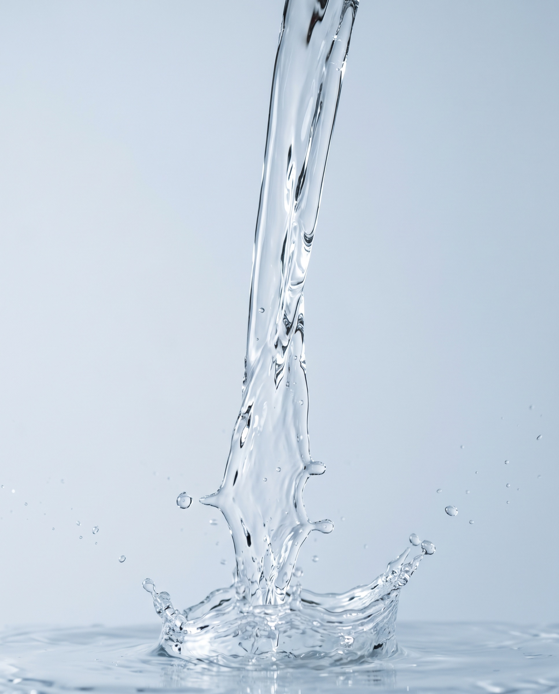
Vodovod
Ves potreben material za izgradnjo ali obnovo zunanjega vodovodnega sistema. Zasuni, hidranti, zračniki, priključki in jaški iz lastne proizvodnje.
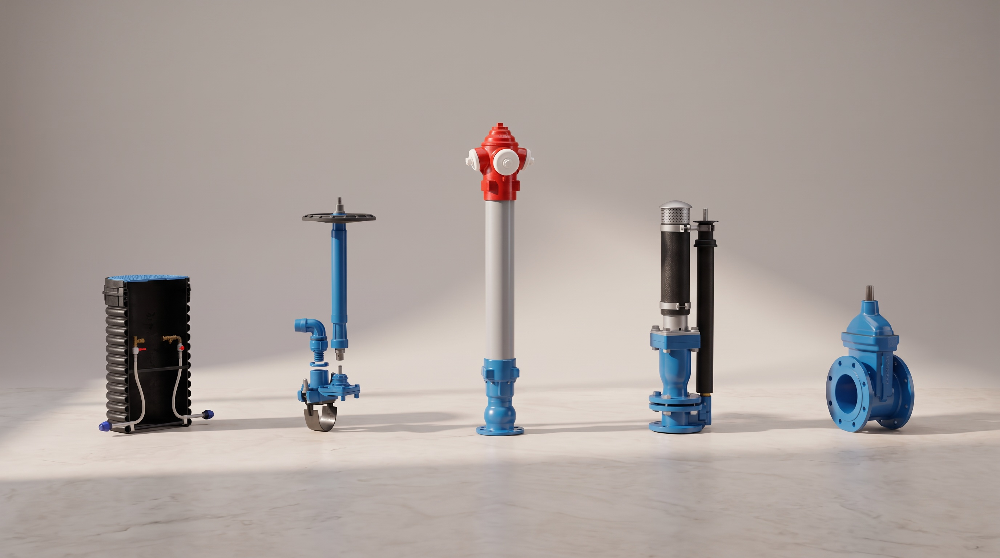
Razvijamo, proizvajamo in vgrajujemo opremo za vodovod in kanalizacijo. Od lastnega razvoja izdelkov do celovite izvedbe projektov.
Za gradnjo ali obnovo omrežja vam ponudimo ves potreben material, svetovanje in izvedbo.

Ves potreben material za izgradnjo ali obnovo zunanjega vodovodnega sistema. Zasuni, hidranti, zračniki, priključki in jaški iz lastne proizvodnje.
Ves material za gradnjo ali obnovo kanalizacije in podobnih sistemov, od jaškov do fazonskih kosov.
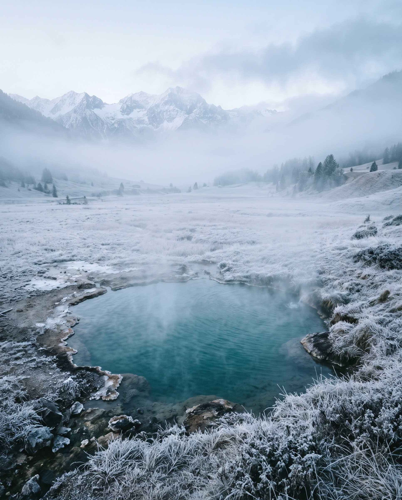
Geotermalna energija je toplota, shranjena v notranjosti Zemlje. Izkoriščamo jo lahko neposredno, z zajemom toplih vodnih ali parnih vrelcev.
Armature in jaški, ki jih razvijemo, ulijemo, zaščitimo in preizkusimo sami. Z certificiranimi materiali za pitno vodo.
Tudi ko ga zadene vozilo, zapiralo ostane na svojem mestu. Za ponovno namestitev zamenjate le vijake.
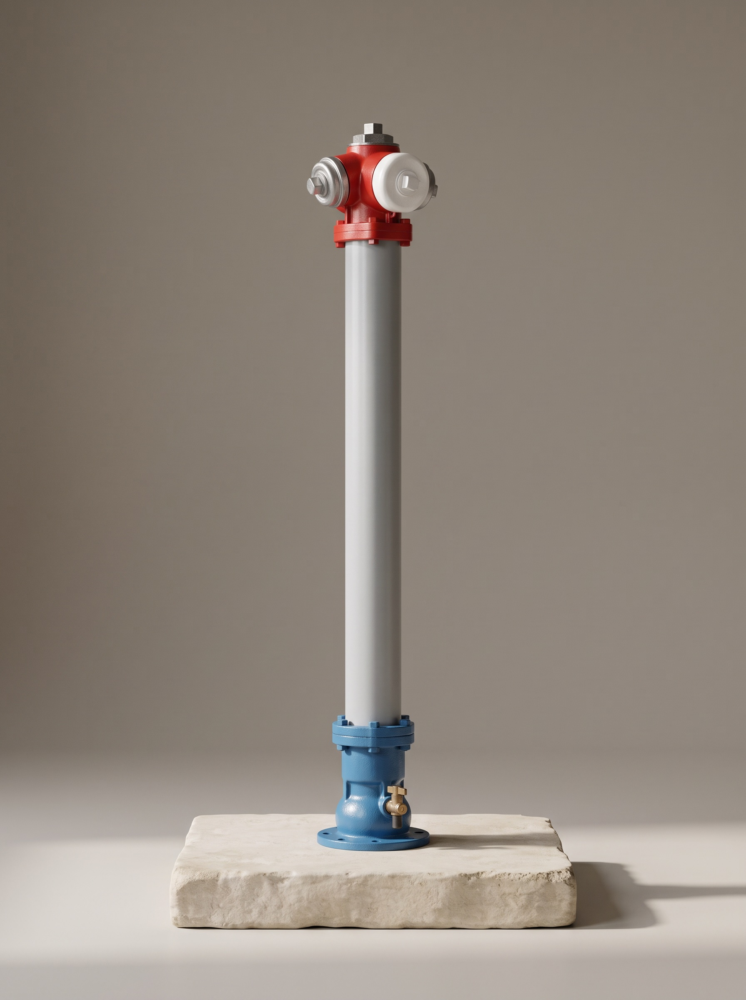
Pod vsako ulico deluje sistem, ki ga ne vidite. Raziščite, kje v omrežju opravljajo svoje delo naši izdelki.
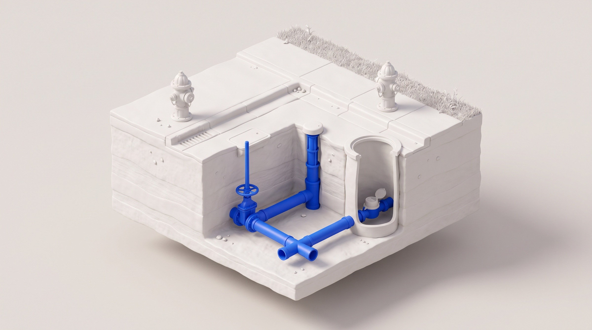
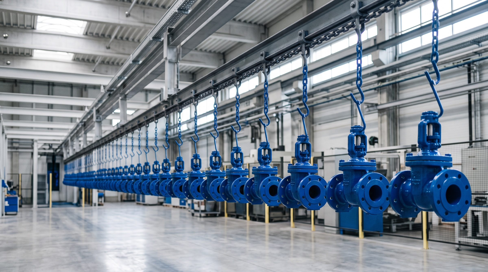
končanih projektov
let delovanja
kakovostnih izdelkov
sodelavcev
Začeli smo z armaturami za zunanji vodovod. Danes obvladujemo celoten projekt, od razvoja izdelka do izvedbe na terenu.
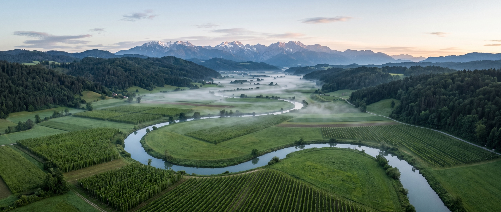
Iz Savinjske doline za vodovodna omrežja po vsej Sloveniji.
Vrbje 80, Žalec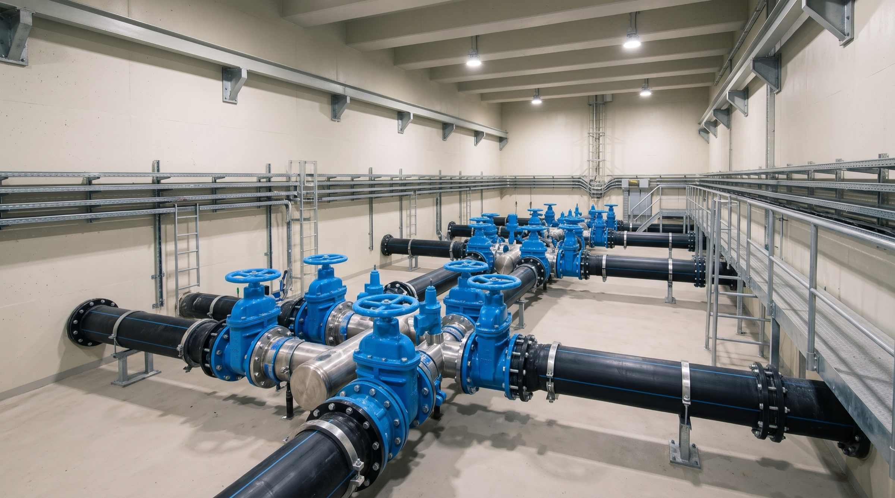
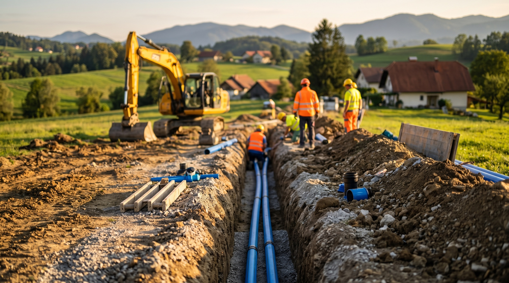
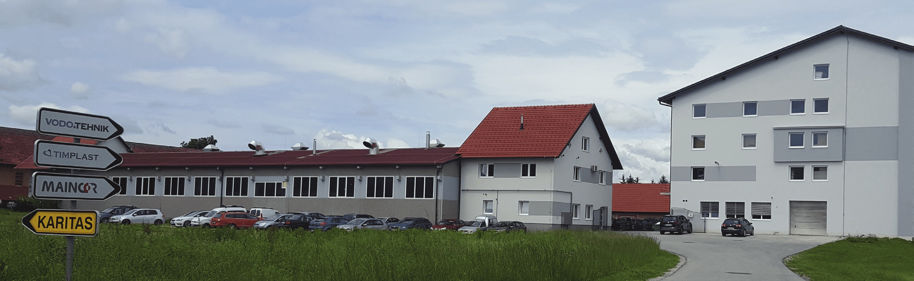
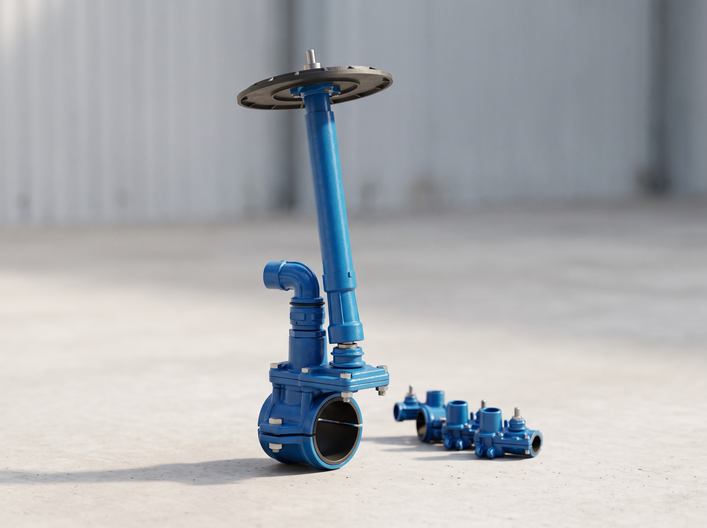
1989
Maks Kač se kot samostojni podjetnik začne ukvarjati s proizvodnjo armatur za zunanji vodovod.
1997
Ustanovljeno je podjetje Vodotehnik d.o.o. s sedežem na Cesti ob železnici 1 v Žalcu.
2003
Podjetje se razširi na lokacijo Vrbje 80, kjer uredimo skladiščne in proizvodne prostore.
2010
Vodenje podjetja s 30 zaposlenimi prevzame Matija Jager. Po potrebi v delo vključujemo zunanje strokovne sodelavce in podjetja.
2018
Pridobimo certifikat sistema vodenja kakovosti za proizvodnjo in trženje vodovodnih in kanalizacijskih sistemov.
Z vgrajevanjem certificiranih materialov ter strokovno in tehnološko dovršeno izvedbo vedno znova dokazujemo, da smo partner, ki mu lahko zaupate.
Opisan in vpeljan sistem vodenja kakovosti za proizvodnjo in trženje vodovodnih in kanalizacijskih sistemov. Izpolnjevanje zahtev vsako leto nadzira in potrjuje neodvisni certifikacijski organ TÜV SÜD.
Certifikat GSK dokazuje najvišji standard barvanja izdelkov, ki se uporabljajo v distribuciji pitne in odpadne vode. Nanos epoksi zaščite najmanj 250 μm.
Kot proizvajalci nadzemnih hidrantov TIP A, DN 80-VT (nelomni) in TIP C, DN 80-VT (lomni) imamo certifikat TSU-1299-CPR-0162 po evropski uredbi o gradbenih proizvodih EU 305/2011.
Prihodnost vidimo v obvladovanju celotnih projektov vodooskrbe in kanalizacije.
Od lastnega razvoja izdelkov in proizvodnje do celovite izvedbe na terenu. Prepričani smo, da lahko le tako naročnikom zagotovimo cenovno ugoden, tehnično kakovosten in strokovno uspešno izpeljan projekt.
Predstavite nam projekt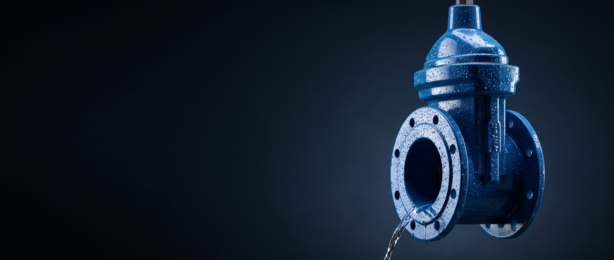
Pripravimo ponudbo, svetujemo pri izbiri in poskrbimo za dobavo.
Pošljite povpraševanje